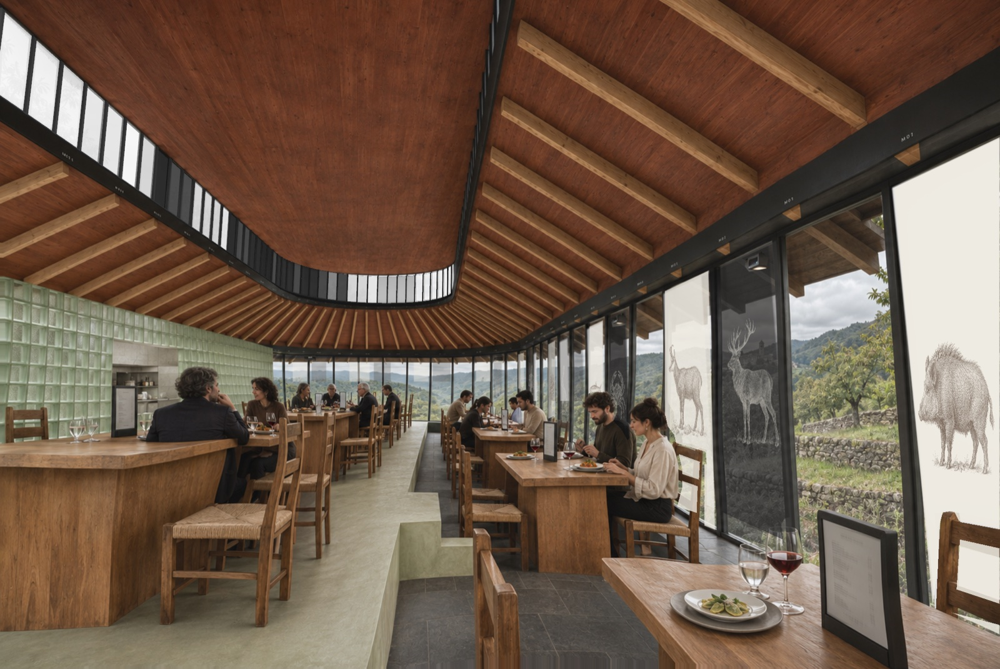
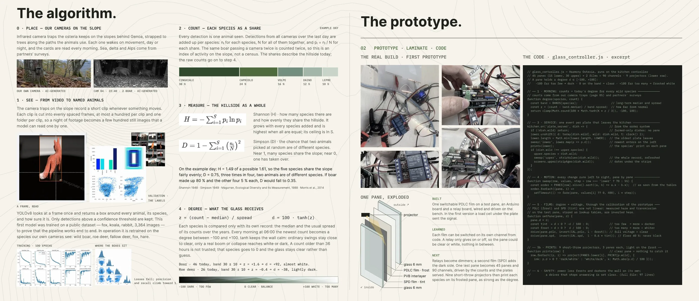

Harmony
Osteria
A restaurant in the hills behind Genoa where you taste how the wild is doing today. The menu is rewritten every morning from last night’s wildlife counts.

“You can’t get them any more.”
One evening a Genoese friend told me about bianchetti — newborn sardines fried into frittelle every winter. They have been off the legal catch since 2010, so the sardines can grow up. My friend only knew because a dish was gone.
I wondered what else changes out there without us noticing — and whether a meal could tell us sooner.
What we eat shapes wildlife. Wildlife shapes what we eat.
A hunter felt every change — fewer tracks, a longer walk, less meat. The hunt itself was the census. Today we measure the wild better than ever, yet a meal tells us less and less.
1890s
Mark–recapture
1960s
Radio collars
1990s
Camera traps
2008
Environmental DNA
2010s
AI recognition
The chain from hill to plate got longer: farm, processing, global transport, supermarket. Every step removes uncertainty — and moves our food further from nature. Each link absorbs the change, so it reaches the table only as a collapse.
One wild, one farmed — in a ratio that follows the wild.
Inspired by the blue crab and the clam: wild and farmed animals compete for the same ground. So every dish pairs one wild species with one farmed one. More out there, a bigger share on the plate. Two boar on the cameras last night: a little boar. Six: a lot more.
Eleven wild species, picked by four rules
It has swung hard
Nearly gone, then too many — or the reverse.
Watched for decades
A long public record to read today against.
A farmed partner
One that tastes different, so the split can be tasted.
All from Italy
Sea, delta, Alps, Apennines — invasive ones too.
Anchovy · Bluefin tuna · Chamois · Blue crab · Hare · Red deer · Wild boar · Roe deer · Swordfish · Wild chestnut · Pine nuts
The plate points, the glass answers.
A dial you eat from: before serving, the upper ceramic plate is turned until its tab points to the dish’s wild share on the fixed 0–100 scale of the charger below. On the wall, glass becomes more opaque as a species moves away from balance — white for too many, dark for too few, clear when it is right.
Change last night’s count
Upper band: one species’ whole record, earliest on the left, today at the right. Lower row: one pane per plate served — each new plate enters on the left and the row moves one pane right.
From a night of footage to a degree on the glass.
Infrared camera traps on the slopes behind Genoa wake on movement; the cards are read every morning. Sea, delta and Alpine species come from partners’ surveys.
Place
Our own cameras along the paths animals use.
See
Clips cut into frames; YOLOv8 boxes each animal and keeps confident detections. Trained on a public dataset of 3,364 images.
Count
Detections per species become shares pi = ni/N — an index of activity, not a census.
Measure
Shannon H and Simpson D read the hillside as a whole. Example day: H = 1.49 of 1.61; D = 0.75.
Degree
Each species against its own record: d = 100·tanh(z), clamped to −100…+100.
Roe deer · 26 today, band 30 ± 10 → z = −0.4 → d = −38, lightly dark.
Data older than 36 hours is not trusted — the species goes to 0 and the glass stays clear.
The real build.
One switchable PDLC film on a test pane, an Arduino board and a relay board, wired and driven by code on the bench. In the first version a load cell under the plate sent the signal.
Each film can be switched on its own channel from code. A relay only gives on or off, so the pane could be clear or white, nothing in between.
Real dimmers; a second film (SPD) adds the dark side. One test pane becomes 45 panes and 90 channels, driven by the counts and the plates served. Nine short-throw projectors print each species on its frosted pane.

The osteria’s own site.
harmony-osteria.it — desktop and phone. A live status line shows lunch, plates served and the last wild dish; the house, the menu and a visit page follow.
The details of the experience
The route
West door, figurine wall, along the glass, the station screen, the round room, out by the north door.
Figurine wall
Niches in a lime wall, a plaster figure in each: what the menu depends on.
Light on the glass
One projector for every three panes. Too many: dark lines on white; too few: white lines on dark.
Station screen
On the wall by the north door: yesterday’s counts.
The round room
Eleven tables, one per species: how it is counted, what it left behind, and a poster that explains both.
Original boards
Click a board to open it; click again to zoom and pan.